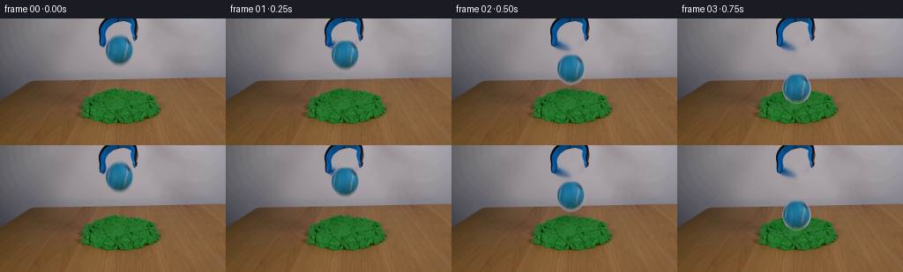
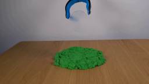
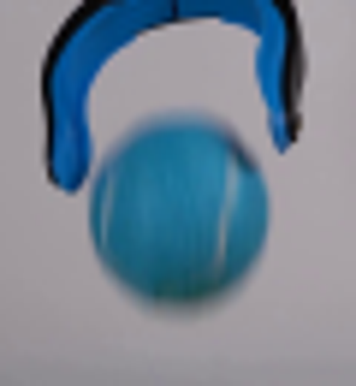
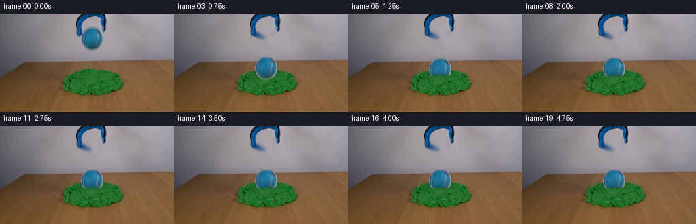
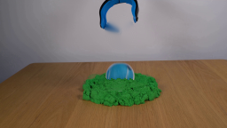

CODING AGENTS AS PIXEL WORLD MODELS
traex/GPT-5.6-Sol · 0017
点击播放 · 原生 RGB 像素
逐轮保存的候选
回放视频、检查图与代码变化。
每份候选均可单独播放。实际图片检查记录在下方工具轨迹中。
候选 01播放与检查图
点击播放 · 原生 RGB 像素


展开代码变化
--- 上一保存版本
+++ 本次保存版本
@@ -0,0 +1,137 @@
+"""Generate a locked-camera demonstration of a tennis ball dropped into kinetic sand."""
+from pathlib import Path
+import numpy as np
+import cv2
+from PIL import Image
+import artifact_io
+
+ROOT = Path(__file__).resolve().parent
+SRC = np.asarray(Image.open(ROOT / "first_frame.png").convert("RGB"))
+H, W = SRC.shape[:2]
+
+
+def ellipse_alpha(h, w, cx, cy, rx, ry, feather=1.2):
+ yy, xx = np.mgrid[:h, :w]
+ d = np.sqrt(((xx-cx)/rx)**2 + ((yy-cy)/ry)**2)
+ return np.clip((1.0 + feather/max(rx,ry) - d) * max(rx,ry)/feather, 0, 1)
+
+
+def over(dst, rgb, alpha):
+ a = alpha[..., None].astype(np.float32)
+ return np.clip(dst.astype(np.float32)*(1-a) + rgb.astype(np.float32)*a, 0, 255).astype(np.uint8)
+
+
+def soft_ellipse(frame, center, axes, color, opacity, sigma=4):
+ m = np.zeros((H,W), np.uint8)
+ cv2.ellipse(m, tuple(map(int,center)), tuple(map(int,axes)), 0, 0, 360, 255, -1, cv2.LINE_AA)
+ if sigma:
+ m = cv2.GaussianBlur(m, (0,0), sigma)
+ return over(frame, np.full_like(frame,color), (m/255.0)*opacity)
+
+
+# Reconstruct the wall exposed after the ball departs. Only the ball interior is
+# filled; the blue gripper is untouched.
+bgr = cv2.cvtColor(SRC, cv2.COLOR_RGB2BGR)
+remove = np.zeros((H,W), np.uint8)
+cv2.ellipse(remove, (135,36), (16,18), 0, 0, 360, 255, -1, cv2.LINE_AA)
+CLEAN = cv2.cvtColor(cv2.inpaint(bgr, remove, 5, cv2.INPAINT_TELEA), cv2.COLOR_BGR2RGB)
+
+# Preserve the photographed ball (its real illumination, fuzz and seam) as a
+# softly matted sprite.
+x0,y0,x1,y1 = 116,17,155,55
+BALL_RGB = SRC[y0:y1, x0:x1].copy()
+bh,bw = BALL_RGB.shape[:2]
+BALL_A = ellipse_alpha(bh,bw,19,19,15.6,17.1,1.25)
+# Avoid admitting blue jaw pixels at the two upper corners.
+yy,xx = np.mgrid[:bh,:bw]
+BALL_A *= np.clip((yy-1)/3,0,1)
+
+# Original sand segmentation; useful for a naturally textured foreground lip.
+hsv = cv2.cvtColor(SRC, cv2.COLOR_RGB2HSV)
+SAND = ((hsv[:,:,0] > 35) & (hsv[:,:,0] < 83) & (hsv[:,:,1] > 80) &
+ (np.indices((H,W))[0] > 72)).astype(np.float32)
+SAND = cv2.GaussianBlur(SAND,(0,0),.45)
+
+rng = np.random.default_rng(1701)
+texture_noise = cv2.GaussianBlur(rng.normal(0,1,(H,W)).astype(np.float32),(0,0),.55)
+
+
+def paste_ball(frame, cx, cy, stretch=1.0, blur_y=0):
+ """Place the photographed ball; optional tiny impact squash/motion blur."""
+ nh = max(2, int(round(bh*stretch)))
+ rgb = cv2.resize(BALL_RGB,(bw,nh),interpolation=cv2.INTER_CUBIC)
+ a = cv2.resize(BALL_A,(bw,nh),interpolation=cv2.INTER_LINEAR)
+ if blur_y:
+ rgb = cv2.GaussianBlur(rgb,(1,blur_y*2+1),blur_y*.55)
+ a = cv2.GaussianBlur(a,(1,blur_y*2+1),blur_y*.45)
+ left = int(round(cx-bw/2)); top = int(round(cy-nh/2))
+ xa,ya=max(0,left),max(0,top); xb,yb=min(W,left+bw),min(H,top+nh)
+ sx,sy=xa-left,ya-top
+ frame[ya:yb,xa:xb] = over(frame[ya:yb,xa:xb], rgb[sy:sy+yb-ya,sx:sx+xb-xa], a[sy:sy+yb-ya,sx:sx+xb-xa])
+ return frame
+
+
+def impact_sand(frame, strength, cx=135):
+ """Add compacted shadow, displaced grains, and a textured front crater rim."""
+ if strength <= 0: return frame
+ # Contact depression under the sphere.
+ frame = soft_ellipse(frame,(cx,88),(24,7),(18,64,32),0.25*strength,2.1)
+ # Two shoulders pushed outward by impact, colored from the photographed sand.
+ green = (16,116,48)
+ for dx,dy,rx,ry in [(-27,-1,9,4),(27,0,10,4),(-36,5,5,3),(37,6,5,3)]:
+ m=np.zeros((H,W),np.uint8)
+ cv2.ellipse(m,(cx+dx,88+dy),(rx,ry),0,0,360,255,-1,cv2.LINE_AA)
+ m=cv2.GaussianBlur(m,(0,0),.45)
+ noisy=np.empty_like(frame)
+ jitter=(texture_noise*12)[...,None]
+ noisy[:]=green
+ noisy=np.clip(noisy.astype(np.float32)+jitter,0,255).astype(np.uint8)
+ frame=over(frame,noisy,(m/255.0)*(0.30*strength))
+ return frame
+
+
+def front_lip(frame, strength, surface_y):
+ """Restore actual sand texture in an irregular crescent in front of the ball."""
+ if strength <= 0: return frame
+ yy,xx=np.mgrid[:H,:W]
+ dx=xx-135
+ # Slightly jagged crater edge, lower in the middle and raised at its shoulders.
+ edge = surface_y + 0.055*np.abs(dx) + 0.75*np.sin(dx*0.9) + 0.35*np.sin(dx*2.1)
+ region = (np.abs(dx)<18) & (yy>=edge) & (yy<102)
+ # Use original green grains, but include a compact dark crest to join naturally.
+ alpha = region.astype(np.float32)*SAND*strength
+ frame = over(frame, SRC, alpha)
+ crest=np.exp(-((yy-edge)/1.05)**2)*np.exp(-(dx/17.0)**4)*strength
+ crest *= (yy>=edge-2)&(yy<=edge+3)
+ dark=np.full_like(frame,(8,72,31))
+ frame=over(frame,dark,crest*0.18)
+ return frame
+
+
+# Centers sampled at a constant 4 fps. The first moments show acceleration,
+# followed by a strongly damped settling motion in the yielding kinetic sand.
+centers = [36,41,57,79,86,82,79.5,80.5,80,80,80,80,80,80,80,80,80,80,80,80]
+frames=[]
+for i,cy in enumerate(centers):
+ if i==0:
+ frames.append(SRC.copy())
+ continue
+ f=CLEAN.copy()
+ # A physically coupled, increasingly tight shadow on the sand.
+ if i<=3:
+ proximity=np.clip((cy-38)/42,0,1)
+ f=soft_ellipse(f,(135,82),(17-4*proximity,4.7-1.5*proximity),(20,45,24),0.08+0.24*proximity,2.7-1.1*proximity)
+ imp = 0 if i<3 else ([0.28,1.0,0.78,0.62][min(i-3,3)] if i<=6 else 0.58)
+ f=impact_sand(f,imp)
+ stretch = 0.91 if i==4 else (1.035 if i==5 else 1.0)
+ blur = 1 if i==2 else 0
+ f=paste_ball(f,135,cy,stretch,blur)
+ if i>=3:
+ lip_strength = 0.45 if i==3 else (1.0 if i==4 else 0.92)
+ lip_y = 92 if i==3 else (88 if i==4 else (89 if i==5 else 90))
+ f=front_lip(f,lip_strength,lip_y)
+ frames.append(f)
+
+frames=np.stack(frames).astype(np.uint8)
+assert np.array_equal(frames[0],SRC)
+artifact_io.save(frames,ROOT)
可观测工具轨迹
实际执行的命令与返回图片。
命令 1exit 0
/bin/bash -lc "cat GENERATION_RULES.md && printf '\\n---PROMPT---\\n' && cat prompt.txt"
命令 2exit 0
/bin/bash -lc "find . -maxdepth 2 -type f -printf '%p\\n' | sort"
命令 3exit 0
/bin/bash -lc "python - <<'PY'
from PIL import Image
import numpy as np
im=np.array(Image.open('first_frame.png').convert('RGB'))
print(im.shape, im.dtype)
# colors/features sample and blue pixel bounds masks
for condname,m in [
('blue', (im[:,:,2]>im[:,:,0]*1.15)&(im[:,:,2]>im[:,:,1]*.8)&(im[:,:,0]<100)&(np.arange(144)[:,None]<70)),
('green',(im[:,:,1]>im[:,:,0]*1.4)&(np.arange(144)[:,None]>70)),
]:
ys,xs=np.where(m); print(condname,(xs.min(),ys.min(),xs.max(),ys.max()),len(xs))
# row spans blue
m=(im[:,:,2]>im[:,:,0]*1.15)&(im[:,:,0]<100)&(np.arange(144)[:,None]<70)
for y in range(0,60):
xs=np.where(m[y])[0]
if len(xs): print(y,xs.min(),xs.max(),len(xs))
PY"命令 4exit 0
/bin/bash -lc "cat > .tmp/test.py <<'PY'
import cv2, numpy as np
from PIL import Image
im=cv2.imread('first_frame.png')
mask=np.zeros(im.shape[:2],np.uint8)
cv2.ellipse(mask,(135,36),(16,17),0,0,360,255,-1)
# protect? all ball remove
out=cv2.inpaint(im,mask,5,cv2.INPAINT_TELEA)
cv2.imwrite('.tmp/clean.png',out)
PY
python .tmp/test.py"命令 5exit 0
/bin/bash -lc "python - <<'PY'
from PIL import Image
import numpy as np
im=np.array(Image.open('first_frame.png'))
for y,x in [(36,135),(22,135),(36,123),(36,148),(49,135),(28,148),(27,122),(30,120),(30,150)]: print(y,x,im[y,x])
PY
sed -n '1,240p' artifact_io.py"命令 6exit 0
/bin/bash -lc "python - <<'PY'
from PIL import Image
im=Image.open('first_frame.png'); im.crop((105,0,165,65)).resize((600,650)).save('.tmp/crop.png')
PY"命令 7exit 0
/bin/bash -lc "cat > generate.py <<'PY'
\"\"\"Generate a locked-camera demonstration of a tennis ball dropped into kinetic sand.\"\"\"
from pathlib import Path
import numpy as np
import cv2
from PIL import Image
import artifact_io
ROOT = Path(__file__).resolve().parent
SRC = np.asarray(Image.open(ROOT / \"first_frame.png\").convert(\"RGB\"))
H, W = SRC.shape[:2]
def ellipse_alpha(h, w, cx, cy, rx, ry, feather=1.2):
yy, xx = np.mgrid[:h, :w]
d = np.sqrt(((xx-cx)/rx)**2 + ((yy-cy)/ry)**2)
return np.clip((1.0 + feather/max(rx,ry) - d) * max(rx,ry)/feather, 0, 1)
def over(dst, rgb, alpha):
a = alpha[..., None].astype(np.float32)
return np.clip(dst.astype(np.float32)*(1-a) + rgb.astype(np.float32)*a, 0, 255).astype(np.uint8)
def soft_ellipse(frame, center, axes, color, opacity, sigma=4):
m = np.zeros((H,W), np.uint8)
cv2.ellipse(m, tuple(map(int,center)), tuple(map(int,axes)), 0, 0, 360, 255, -1, cv2.LINE_AA)
if sigma:
m = cv2.GaussianBlur(m, (0,0), sigma)
return over(frame, np.full_like(frame,color), (m/255.0)*opacity)
# Reconstruct the wall exposed after the ball departs. Only the ball interior is
# filled; the blue gripper is untouched.
bgr = cv2.cvtColor(SRC, cv2.COLOR_RGB2BGR)
remove = np.zeros((H,W), np.uint8)
cv2.ellipse(remove, (135,36), (16,18), 0, 0, 360, 255, -1, cv2.LINE_AA)
CLEAN = cv2.cvtColor(cv2.inpaint(bgr, remove, 5, cv2.INPAINT_TELEA), cv2.COLOR_BGR2RGB)
# Preserve the photographed ball (its real illumination, fuzz and seam) as a
# softly matted sprite.
x0,y0,x1,y1 = 116,17,155,55
BALL_RGB = SRC[y0:y1, x0:x1].copy()
bh,bw = BALL_RGB.shape[:2]
BALL_A = ellipse_alpha(bh,bw,19,19,15.6,17.1,1.25)
# Avoid admitting blue jaw pixels at the two upper corners.
yy,xx = np.mgrid[:bh,:bw]
BALL_A *= np.clip((yy-1)/3,0,1)
# Original sand segmentation; useful for a naturally textured foreground lip.
hsv = cv2.cvtColor(SRC, cv2.COLOR_RGB2HSV)
SAND = ((hsv[:,:,0] > 35) & (hsv[:,:,0] < 83) & (hsv[:,:,1] > 80) &
(np.indices((H,W))[0] > 72)).astype(np.float32)
SAND = cv2.GaussianBlur(SAND,(0,0),.45)
rng = np.random.default_rng(1701)
texture_noise = cv2.GaussianBlur(rng.normal(0,1,(H,W)).astype(np.float32),(0,0),.55)
def paste_ball(frame, cx, cy, stretch=1.0, blur_y=0):
\"\"\"Place the photographed ball; optional tiny impact squash/motion blur.\"\"\"
nh = max(2, int(round(bh*stretch)))
rgb = cv2.resize(BALL_RGB,(bw,nh),interpolation=cv2.INTER_CUBIC)
a = cv2.resize(BALL_A,(bw,nh),interpolation=cv2.INTER_LINEAR)
if blur_y:
rgb = cv2.GaussianBlur(rgb,(1,blur_y*2+1),blur_y*.55)
a = cv2.GaussianBlur(a,(1,blur_y*2+1),blur_y*.45)
left = int(round(cx-bw/2)); top = int(round(cy-nh/2))
xa,ya=max(0,left),max(0,top); xb,yb=min(W,left+bw),min(H,top+nh)
sx,sy=xa-left,ya-top
frame[ya:yb,xa:xb] = over(frame[ya:yb,xa:xb], rgb[sy:sy+yb-ya,sx:sx+xb-xa], a[sy:sy+yb-ya,sx:sx+xb-xa])
return frame
def impact_sand(frame, strength, cx=135):
\"\"\"Add compacted shadow, displaced grains, and a textured front crater rim.\"\"\"
if strength <= 0: return frame
# Contact depression under the sphere.
frame = soft_ellipse(frame,(cx,88),(24,7),(18,64,32),0.25*strength,2.1)
# Two shoulders pushed outward by impact, colored from the photographed sand.
green = (16,116,48)
for dx,dy,rx,ry in [(-27,-1,9,4),(27,0,10,4),(-36,5,5,3),(37,6,5,3)]:
m=np.zeros((H,W),np.uint8)
cv2.ellipse(m,(cx+dx,88+dy),(rx,ry),0,0,360,255,-1,cv2.LINE_AA)
m=cv2.GaussianBlur(m,(0,0),.45)
noisy=np.empty_like(frame)
jitter=(texture_noise*12)[...,None]
noisy[:]=green
noisy=np.clip(noisy.astype(np.float32)+jitter,0,255).astype(np.uint8)
frame=over(frame,noisy,(m/255.0)*(0.30*strength))
return frame
def front_lip(frame, strength, surface_y):
\"\"\"Restore actual sand texture in an irregular crescent in front of the ball.\"\"\"
if strength <= 0: return frame
yy,xx=np.mgrid[:H,:W]
dx=xx-135
# Slightly jagged crater edge, lower in the middle and raised at its shoulders.
edge = surface_y + 0.055*np.abs(dx) + 0.75*np.sin(dx*0.9) + 0.35*np.sin(dx*2.1)
region = (np.abs(dx)<18) & (yy>=edge) & (yy<102)
# Use original green grains, but include a compact dark crest to join naturally.
alpha = region.astype(np.float32)*SAND*strength
frame = over(frame, SRC, alpha)
crest=np.exp(-((yy-edge)/1.05)**2)*np.exp(-(dx/17.0)**4)*strength
crest *= (yy>=edge-2)&(yy<=edge+3)
dark=np.full_like(frame,(8,72,31))
frame=over(frame,dark,crest*0.18)
return frame
# Centers sampled at a constant 4 fps. The first moments show acceleration,
# followed by a strongly damped settling motion in the yielding kinetic sand.
centers = [36,41,57,79,86,82,79.5,80.5,80,80,80,80,80,80,80,80,80,80,80,80]
frames=[]
for i,cy in enumerate(centers):
if i==0:
frames.append(SRC.copy())
continue
f=CLEAN.copy()
# A physically coupled, increasingly tight shadow on the sand.
if i<=3:
proximity=np.clip((cy-38)/42,0,1)
f=soft_ellipse(f,(135,82),(17-4*proximity,4.7-1.5*proximity),(20,45,24),0.08+0.24*proximity,2.7-1.1*proximity)
imp = 0 if i<3 else ([0.28,1.0,0.78,0.62][min(i-3,3)] if i<=6 else 0.58)
f=impact_sand(f,imp)
stretch = 0.91 if i==4 else (1.035 if i==5 else 1.0)
blur = 1 if i==2 else 0
f=paste_ball(f,135,cy,stretch,blur)
if i>=3:
lip_strength = 0.45 if i==3 else (1.0 if i==4 else 0.92)
lip_y = 92 if i==3 else (88 if i==4 else (89 if i==5 else 90))
f=front_lip(f,lip_strength,lip_y)
frames.append(f)
frames=np.stack(frames).astype(np.uint8)
assert np.array_equal(frames[0],SRC)
artifact_io.save(frames,ROOT)
PY
python generate.py"命令 8exit 0
/bin/bash -lc "python - <<'PY'
import numpy as np
from PIL import Image
p=np.load('pixels.npz')['pixels']
a=np.array(Image.open('first_frame.png').convert('RGB'),dtype=np.uint32)
q=(a[:,:,0]<<16)|(a[:,:,1]<<8)|a[:,:,2]
print('pixels',p.shape,p.dtype,'frame0 exact',np.array_equal(p[:,:,0],q))
print('frames',len(list(__import__('pathlib').Path('frames').glob('*.png'))))
PY"视觉工具实际返回图片 1

视觉工具实际返回图片 2

视觉工具实际返回图片 3

视觉工具实际返回图片 4

视觉工具实际返回图片 5

视觉工具实际返回图片 6

保存候选 1 份；完成命令 8 次；可验证图片返回 6 张。原始 API 响应与完整日志保留在本地。